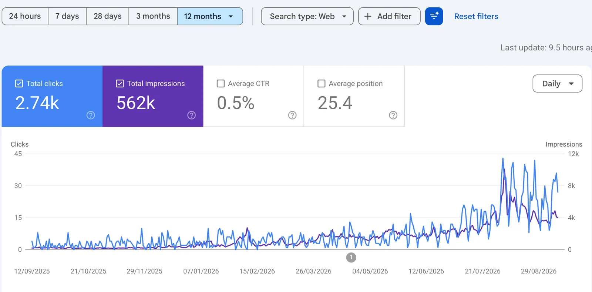

Industrial robotics · China → global markets
Reeman Robotics
6.1×monthly Google clicks
A 12-language website and buyer-focused technical guides helped a Shenzhen robotics manufacturer reach overseas buyers.
Jan–Aug 2026; AI snapshot Sep 2026View project